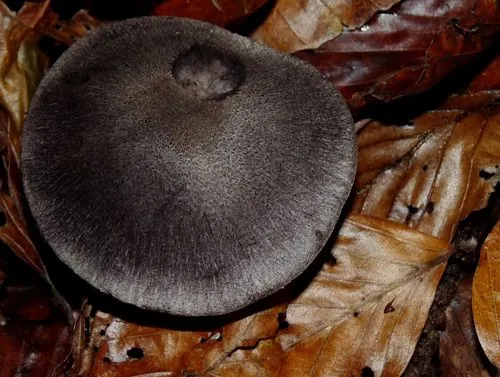

真菌 · 真菌界
棕灰口蘑 Tricholoma terreum

口蘑科食用菌，菌盖鼠灰色、表面有细绒毛，秋季生于针叶林地上，虽可食但存在中毒争议，须谨慎。
- 分类
- 门担子菌门纲伞菌纲目伞菌目科口蘑科属口蘑属
- 栖息环境
- 松、云杉等针叶林地上，秋季成群发生
- 地理分布
- 北半球温带针叶林广布，中国东北、华北及欧洲、北美常见
- 保护级别
- 暂无评估；种群数量大，分布广
物种志
棕灰口蘑的子实体中等，菌盖直径 3–8 厘米，初期钟形，后平展，中央稍凸，表面鼠灰至棕灰色，密被细绒毛或鳞片，边缘常开裂。菌肉白色，薄，气味温和。菌褶白色至灰白色，较密，弯生。菌柄圆柱形，长 3–7 厘米，直径 0.8–1.5 厘米，白色至灰白，表面有细纵纹。孢子印白色。
棕灰口蘑生于松、云杉等针叶林地上，秋季 9–11 月成群发生，是北半球温带常见的林地蘑菇。它曾被广泛食用，但近年欧洲有报道称连续或大量食用后出现横纹肌溶解样症状，其安全性存在争议，因此不建议大量采食，尤其不要与酒同食。采食时必须与有毒的灰花纹鹅膏、丝盖伞等严格区分：后两者菌褶色深、有菌环或菌托，而棕灰口蘑通体灰白、无菌环菌托。
形态与习性
- 菌盖直径 3–8 厘米，鼠灰色，密被细绒毛
- 菌柄长 3–7 厘米，白色至灰白，无菌环
- 孢子印白色，孢子椭圆形
- 生境针叶林地上，秋季 9–11 月成群
- 食用性曾广泛食用，但安全性有争议，不建议多食
- 易混淆与灰花纹鹅膏等剧毒菌区分：后者有菌环菌托
趣味知识
- 棕灰口蘑通体鼠灰色、表面有细绒毛，是针叶林秋季最常见的蘑菇之一。
- 近年有研究提示大量食用后可能出现肌肉损伤症状，因此专家建议不要贪食。
- 它最大的危险是与剧毒的灰花纹鹅膏混淆，后者菌柄上有菌环、基部有菌托。
- 采食任何灰色蘑菇前，务必检查菌柄基部是否有袋状菌托，有则绝不采食。